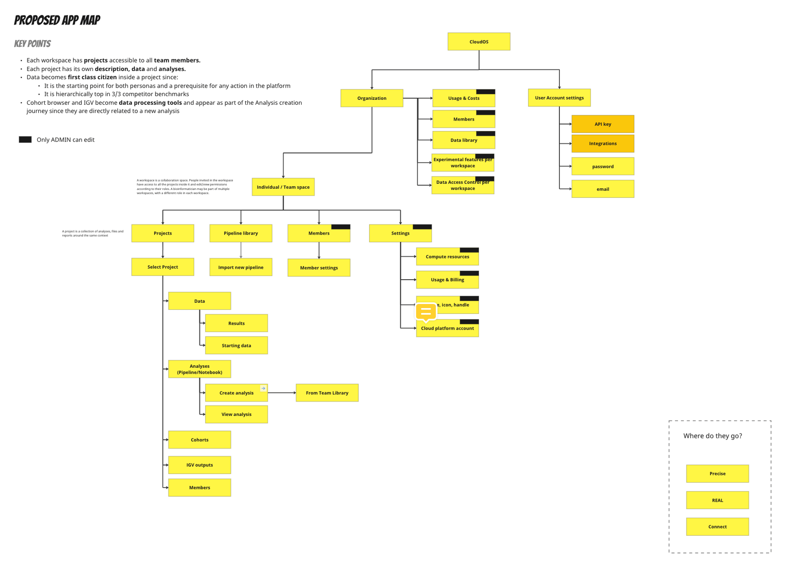

Lifebit: Designing a Self-Serve Clinical Extract, Transform, Load (ETL) Portal

Impact
At Lifebit, I designed a self-serve clinical extract, transform, load (ETL) portal that turned complex data mapping into a visual, no-code process. The goal was to help researchers upload unstructured clinical datasets and map their source fields to the standardised OMOP Common Data Model (CDM) without waiting weeks for data engineers to write custom scripts. By translating database schemas into an intuitive table mapper, we removed a major research bottleneck and made multi-omic analysis accessible to everyone.
Challenges
Clinical genomics and precision medicine rely on combining DNA datasets with clinical patient data. However, raw clinical data comes in messy, unstructured formats with completely different naming conventions. To query cohorts or pipelines, these files must first be standardised into a common database model like OMOP. Traditionally, this required data engineers to write custom clean-up scripts for every new cohort.
Key problem areas included:
- The data engineering bottleneck: Scientists had to wait in a queue for data engineers to write custom scripts to map their raw source fields (like patient ID or drug names) into standard OMOP tables.
- Invisible formatting errors: Uploading raw datasets was error-prone, but users had no way of knowing if their files were formatted correctly until downstream analyses failed.
- A lack of no-code tools: There was no visual way to create source-to-target maps, meaning non-technical researchers were completely locked out of the ingestion process.
Project details
- Role: Lead Product Designer & UX Researcher (Collaborating with PMs and FE/BE developers)
- Timeframe: ~3 months
- Tools: Figma, FigJam, React, Storybook, Maze
Designing a collaborative prototype
To translate database schema mapping into a visual UI, we started with co-design sessions involving product managers, database engineers, and researchers. This helped us map out the end-to-end clinical journey: importing files, mapping source fields, querying cohorts, and finally running pipelines.
Once we built an initial prototype, we validated it with a wide range of users, including both code-competent bioinformaticians who understood the database schemas and no-code clinical researchers. After refining the flow, I paired closely with front-end and back-end developers to implement it.
Building the self-serve extract, transform, load (ETL) flow
We designed the interface to guide users through mapping their own clinical datasets step-by-step:
- Format validators: Automated checks run the moment a file is uploaded, flagging any encoding or column errors before the mapping work begins.
- Visual mapping table: A columns-to-columns table layout lets users match their messy raw source data fields to the standardised target fields inside OMOP tables (such as matching demographics to the
persontable). - Form-based editing: A clean form UI lets scientists review the generated mapping, double-check relationships, and edit anomalies before finalising the ingestion.
Results and outcomes
- Eliminated the bottleneck: By making extract, transform, load (ETL) self-serve, we cut the reliance on data engineers, letting scientists upload and map their own clinical datasets in minutes instead of weeks.
- No-code OMOP mapping: The visual table mapper allowed any researcher to match source fields to OMOP tables, expanding the platform's active user base.
- Fewer failed runs: Ingestion-phase validation caught data anomalies early, drastically reducing errors during downstream cohort querying and pipeline runs.
- Streamlined implementation: Pairing directly with front-end and back-end engineers and documenting components in Storybook cut down implementation errors and accelerated the release.